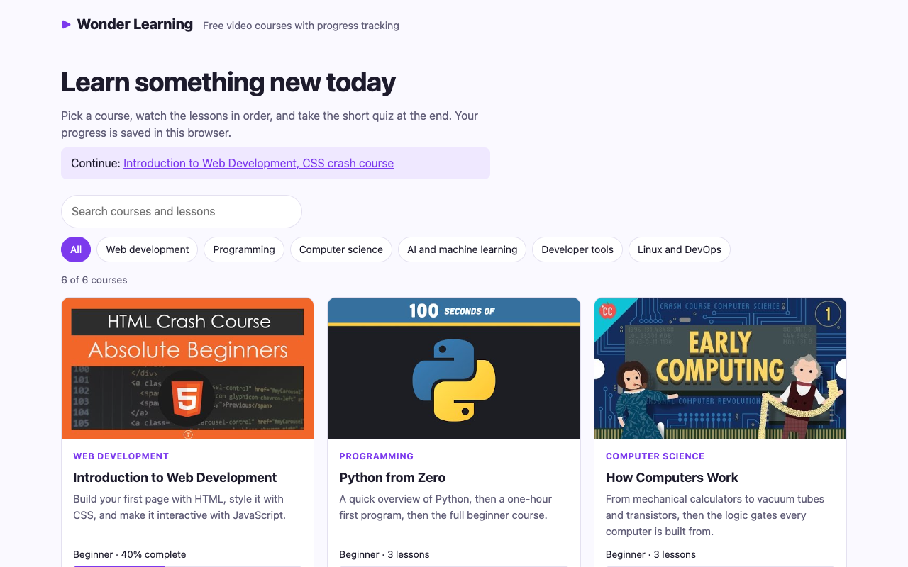
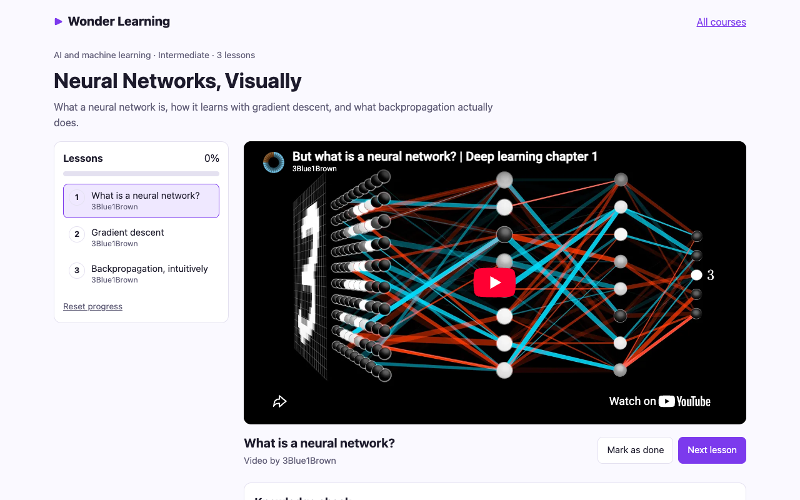
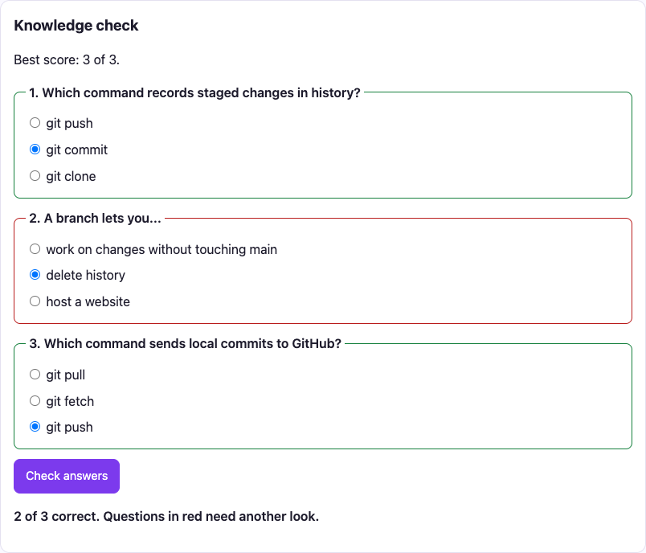
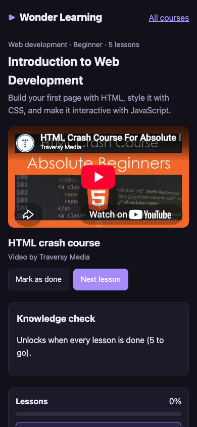

Wonder Learning
Video course platform with progress tracking, resume and quizzes, no backend

Overview

Wonder Learning is a front-end e-learning platform: a course catalog, a course page with a video player and a lesson list, progress tracking, and a short quiz at the end of each course. It needs no backend. The whole catalog lives in one JavaScript data file, and each learner's progress is saved in their own browser.
It ships with 6 courses and 20 lessons in web development, Python, computer science, neural networks, Git, and Linux and containers. Every lesson is a public YouTube video by a well-known creator (Traversy Media, Fireship, CrashCourse, 3Blue1Brown, Programming with Mosh and freeCodeCamp), credited on the course page. All 20 video IDs were checked against YouTube's oEmbed service before they went into the catalog.
A lesson is marked done when its video ends, or by hand. The playback position is saved every five seconds, so a lesson reopens where you stopped, and the catalog offers a Continue link to the first unfinished course. When every lesson in a course is done, a three-question knowledge check unlocks and the best score is kept.
The source code is on GitHub at TYFSADIK/wonder-learning. The project dates from 2023; the code was rebuilt and published in 2026 with resume, quizzes, search and a test suite.
Features
| Feature | How it works |
|---|---|
| Data-driven catalog | Cards render from course-data.js; adding a course is a data edit |
| Category filter and search | Filter buttons with aria-pressed; search covers titles, descriptions, lesson titles and authors; both kept in the URL |
| Video lessons | YouTube iframe API; clicking a lesson switches video without reloading |
| Automatic completion | onStateChange with ENDED marks the lesson done |
| Manual completion | Mark as done, or not done, with one button |
| Resume playback | Position saved every 5 s while playing, and on leaving the page |
| Continue link | The catalog points to the next lesson of the first started course |
| Knowledge check | 3 questions per course, unlocked at 100%; right and wrong answers outlined; best score saved |
| Fallback | If the YouTube API cannot load, a direct link to the video appears |
| Reset | Clears one course's progress after a confirmation |
Architecture
The pure logic sits in progress.js: reading and writing progress, percentages, quiz scoring and the catalog filter. It takes its storage as a parameter, so the tests hand it an in-memory object and the browser hands it localStorage. Everything that touches the page lives in catalog.js and player.js, and builds elements with createElement and textContent rather than HTML strings.
Tech Stack
- Vanilla JavaScript (ES modules), two page scripts, one data module, one logic module
- YouTube iframe API,
YT.Player,loadVideoById,cueVideoById,getCurrentTimeandonStateChange - localStorage, progress under one key as JSON, read inside
try/catch - HTML5, semantic pages, a labelled progress bar, quiz questions as
fieldsetandlegend - CSS3, a Grid catalog, a two-column course layout that stacks on phones, light and dark themes
- Node test runner, 9 unit tests; Playwright for the end-to-end checks
Build Process
A course is an object with an ID, a category, a level, a description, its lessons and its quiz. Lesson IDs follow the pattern courseId-lN, and a test enforces it.
{
id: 'ml-101',
title: 'Neural Networks, Visually',
category: 'ai',
level: 'Intermediate',
lessons: [
{ id: 'ml-101-l1', title: 'What is a neural network?', videoId: 'aircAruvnKk', author: '3Blue1Brown' },
{ id: 'ml-101-l2', title: 'Gradient descent', videoId: 'IHZwWFHWa-w', author: '3Blue1Brown' },
{ id: 'ml-101-l3', title: 'Backpropagation, intuitively', videoId: 'Ilg3gGewQ5U', author: '3Blue1Brown' },
],
quiz: [
{ q: 'What does gradient descent try to make smaller?',
options: ['The number of layers', 'The cost function', 'The learning rate'], answer: 1 },
],
}All progress lives under one key, one entry per course. A flat list of lesson IDs would make per-course percentages depend on the ID format; a nested object keeps each course independent and makes reset a single delete.
// localStorage['wl-progress']
{
"git-101": {
"done": ["git-101-l1", "git-101-l2"],
"quiz": 3,
"resume": { "git-101-l2": 312 }
}
}localStorage can be full, blocked in private mode, or hold old or corrupt data. Reads are parsed inside try/catch, writes are wrapped too, and an older save format (a plain array) is upgraded on read. The storage object is injected, so the tests can make it throw on purpose.
export function createProgress(storage = globalThis.localStorage) {
function loadAll() {
try {
const data = JSON.parse(storage.getItem(STORAGE_KEY));
return data && typeof data === 'object' ? data : {};
} catch {
return {};
}
}
function save(all) {
try {
storage.setItem(STORAGE_KEY, JSON.stringify(all));
} catch {
// Private mode or full storage: progress just will not persist.
}
}
// ...
}Cards and lesson buttons are built with a tiny el() helper over createElement, so course text can never be interpreted as markup.
function el(tag, props = {}, ...children) {
const node = Object.assign(document.createElement(tag), props);
node.append(...children);
return node;
}The page loads the iframe API, creates the player in onYouTubeIframeAPIReady at the saved position, and listens to state changes. While a video plays, the position is saved every five seconds; within ten seconds of the end it counts as finished, so a lesson never resumes into the credits.
function onStateChange(e) {
const { PLAYING, ENDED } = window.YT.PlayerState;
clearInterval(resumeTimer);
if (e.data === PLAYING) resumeTimer = setInterval(saveResume, 5000);
else saveResume();
if (e.data === ENDED) {
setDone(current, true);
const next = course.lessons[indexOf(current) + 1];
if (next) $('next').focus();
}
}The catalog filter is a pure function: a category plus every word of the query must appear somewhere in the course text, including lesson titles and authors. So 3blue1brown gradient finds the neural networks course.
export function filterCourses(courses, { category = 'all', query = '' } = {}) {
const q = query.trim().toLowerCase();
return courses.filter(c => {
if (category !== 'all' && c.category !== category) return false;
if (!q) return true;
const text = [c.title, c.description, ...c.lessons.map(l => `${l.title} ${l.author}`)].join(' ').toLowerCase();
return q.split(/\s+/).every(word => text.includes(word));
});
}The quiz form is only built once every lesson is done. Answers are radio buttons marked required, so the browser itself refuses an incomplete submission. Scoring is a pure function, and each question's fieldset is outlined green or red.
Learner Journey


The course page always opens on something useful: the lesson named in the URL if there is one, otherwise the first unfinished lesson. Every lesson switch updates the URL, so a link such as course.html?id=git-101&lesson=git-101-l2 opens that exact lesson.
The YouTube Player
One development trap deserves a note: the iframe API talks to the page with postMessage, and from a file:// page the origin is null, so the callbacks never arrive. The project must be served over HTTP, even locally, and the README says so first.
Testing

Nine unit tests run in Node with no browser, because the logic module takes its storage as an argument:
- Completion is stored per course and never duplicated, and a lesson can be marked not done again
- Corrupt JSON and the older array format both load without crashing
- Storage that throws on every call (private mode) is tolerated
- Resume points are kept after five seconds and cleared at zero
- The quiz keeps the best score, and scoring and percentages are right
- Filtering by category and by several search words, together and apart
- The catalog data itself: unique IDs, the lesson ID pattern, 11-character video IDs, an author on every lesson, and quiz answers that point at a real option
Then 16 end-to-end checks ran in Chrome with Playwright: filters, search and its URL, the YouTube player actually loading, completion percentages, quiz locking, the browser refusing an incomplete quiz, scoring, persistence across a reload, the completed course on the catalog, the not-found page, and no sideways scrolling on a phone.
The one feature that needs a real video was tested with a real video: the test drove the embedded player through the public API to the last seconds of the 117-second Git in 100 seconds lesson, let it end, and confirmed that the lesson was marked done on its own.
Challenges and Lessons Learned
Third-party APIs need a real origin. The YouTube API failing silently from file:// looks exactly like a bug in your own code. Reproduce integrations over HTTP from the first day.
Browser storage is a database; give it a schema. Choosing the nested { courseId: { done, quiz, resume } } shape early kept every query simple, and an explicit upgrade path for the old format kept existing progress.
Plan for storage to fail. Private browsing and full quotas make localStorage throw. Wrapping reads and writes means the site still works; it just forgets.
Placeholder data ships. The original draft of the catalog had a PASTE_YOUTUBE_ID_HERE placeholder. Checking every ID against oEmbed before release is cheap, and it caught one dead ID before it reached the catalog.
Test with the real thing where it matters. Mocking the YouTube player would have proved nothing about the ENDED event. Letting a real video finish proved it works.
What I Learned
- The YouTube iframe API lifecycle: loading,
onYouTubeIframeAPIReady, player events and playback control - Designing a localStorage schema, and making reads and writes fail safely
- Dependency injection in plain JavaScript: passing storage in makes browser code testable in Node
- Data-driven rendering, the idea behind component frameworks, built by hand
- Accessible controls without a framework: real buttons,
aria-pressed,aria-current, labelled progress bars and fieldsets - URL state with
URLSearchParamsandhistory.replaceState
What You Need
| Category | Item | Notes |
|---|---|---|
| Tool | A local web server, e.g. npx serve | Required: the YouTube API does not work from file:// |
| Tool | A modern browser | localStorage and ES modules |
| Tool | Node.js 20 or later | Only for the unit tests |
| Content | Public YouTube videos | Check each ID before adding it |
| Skill | JavaScript modules and the DOM | No framework |
| Skill | Basic accessibility | Buttons, labels, focus, ARIA states |
What Is Next
- Optional sign-in with a small backend (or Supabase) to sync progress across devices
- Lesson notes and bookmarks at a timestamp
- Longer quizzes with explanations for each answer
- Search inside video transcripts
- An offline catalog with a service worker
- Publishing a live demo on GitHub Pages